MUFC Fan Page
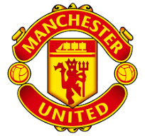
Welcome to the MUFC Fan Page! Subscribe to our newsletter to stay updated with the latest news and updates.
History:
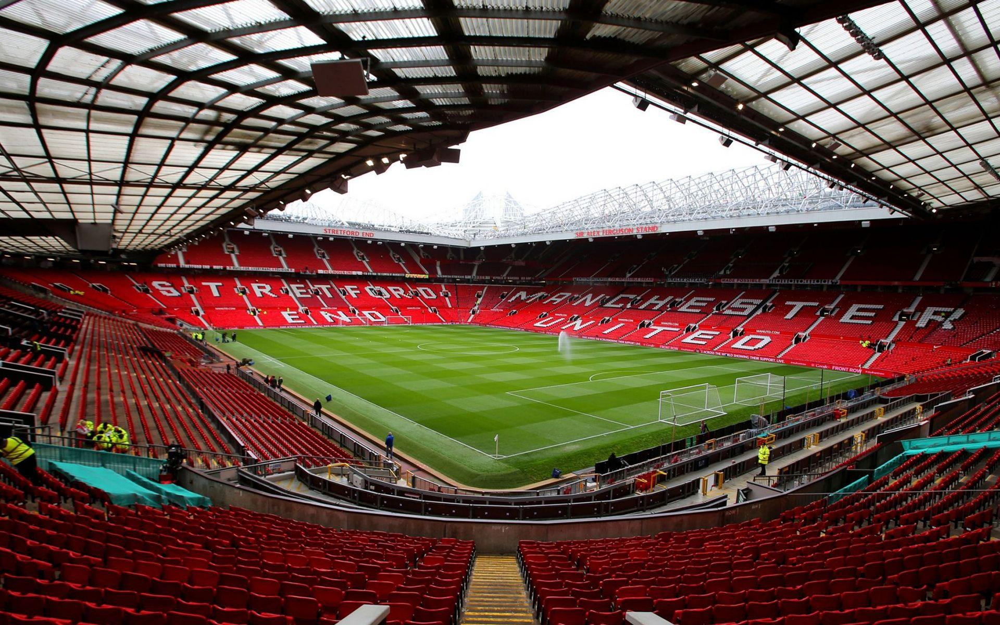
Manchester United Football Club is a professional football club based in Greater Manchester and nicknamed the Red Devils. The club was founded in 1878 as Newton Heath LYR Football Club, and changed its name to Manchester United in 1902. Manchester United are one of the most successful clubs in English football history, having won a record 20 league titles and being the first english club to win the European Cup. Long-standing rivalries exist with both Liverpool and Manchester City with derby games being some of the most anticipated matches in the sport. Manchester United play their home matches at Old Trafford, having moved to the stadium in 1910 from the Bank Street ground. Old Trafford has been regualrly renovated over the years currently having a capacity of 74,158 and has played host to many memorable moments in not only the club's history but annually hosting the Rugby League Grand Final.
Current Squad:
Goalkeeper:
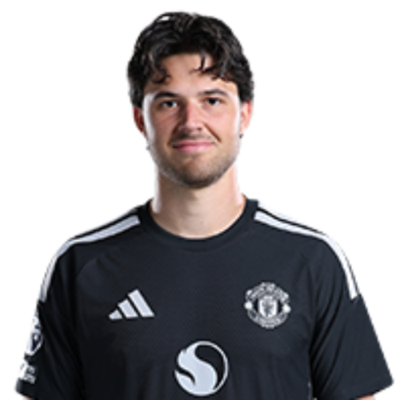
Senne Lammens
Nationality: Belgium
International Caps: 6
Date of Birth: 07/07/2002
Profile:
Lammens joined Manchester United in 2025 from Royal Antwerp for a fee of £18.1 million making his debut on the 4th of October against Sunderland. He quickly established himself as the first choice goalkeeper for the club being named Premier League Transfer of the 2025-26 season.
Defenders:
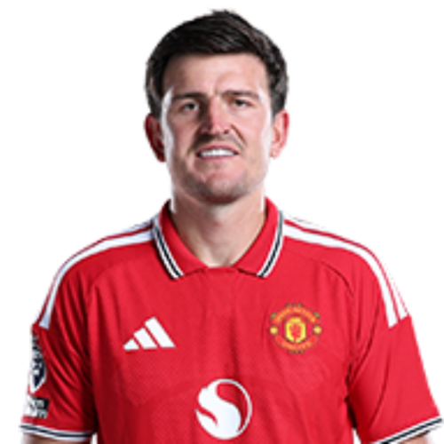
Harry Maguire
Nationality: England
International Caps: 66
Date of Birth: 05/03/1993
Profile:
Maguire moved to Manchester United in 2019 from Leicester City for a transfer fee of £80 million. Making him the most expensive defender in the world at the time. He made his debut on the 11th of August against Chelsea and has been a key player for the club, helping them win both the FA Cup in 2024 and EFL Cup in 2023. He has previously captained the club under Ole Gunnar Solskjaer.
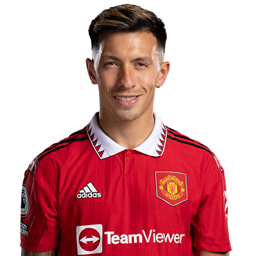
Lisandro Martinez
Nationality: Argentina
International Caps: 38
Date of Birth: 18/01/1998
Profile:
Martinez joined Manchester United in 2022 from Ajax for an agreed fee of £49 million making his debut on the 7th of August against Brighton & Hove Albion. He has been a strong defensive presence for both club and country helping Manchester United to the FA Cup in 2024 and the EFL Cup in 2023. He was part of the Argentina national team that won Copa América in both 2021 and 2024 and the FIFA World Cup in 2022.
Midfielders:
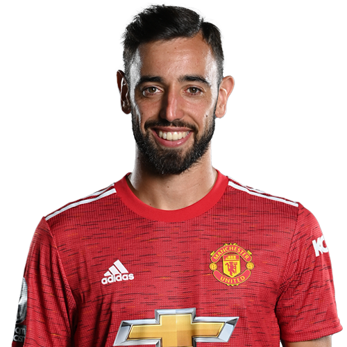
Bruno Fernandes
Nationality: Portugal
International Caps: 97
Date of Birth: 08/09/1994
Profile:
Fernandes arrived at Manchester United in 2020 from Sporting CP for a transfer fee of £67.6 million. Fernandes is the current captain of the club and has been a key player, helping them win both the FA Cup in 2024 and EFL Cup in 2023. He has also been a strong performer for the Portugal national team, earning 97 caps and scoring 29 goals while helping the team to victory in the UEFA Nations League in both 2019 and 2025.
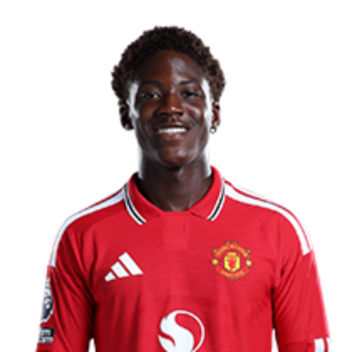
Kobbie Mainoo
Nationality: England
International Caps: 14
Date of Birth: 19/04/2005
Profile:
Mainoo is a graduate of the Manchester United academy signing his first professional contract with the club in 2022 and making his debut against Newcastle United on the 16th of October. Through his performances he has become an important player for the club. He has been praised for his technical ability and work rate and was a member of the squad that won the FA Cup in 2024.
Forwards:
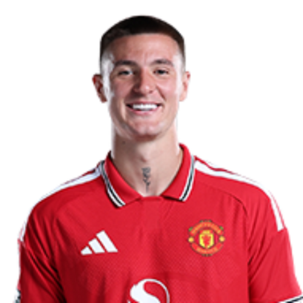
Benjamin Sesko
Nationality: Slovenia
International Caps: 45
Date of Birth: 31/05/2003
Profile:
Sesko moved to Manchester United in 2025 from RB Leipzig for a fee of £76.5 million with an additional £8.5 million in performance related add-ons. He made his debut on the 17th of August against Arsenal and is considered one of the most promising young strikers in European football. Finishing the 2025-26 season as joint top goal scorer with 11 league goals.
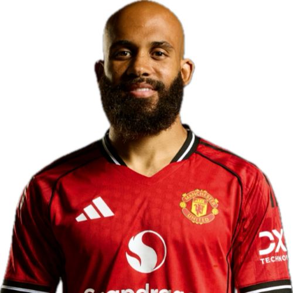
Bryan Mbeumo
Nationality: Cameroon
International Caps: 35
Date of Birth: 07/08/1999
Profile:
Mbeumo joined Manchester United during the summer of 2025 for a transfer fee of £71 million, following a successful season where he scored 20 league goals. He has quickly established himself as a key player for the club, known for his pace and technical ability. Mbeumo has been a regular starter for the team finishing as joint top goal scorer in his first season with 11 league goals.
Honours
| Competiton | Titles | Season | |
|---|---|---|---|
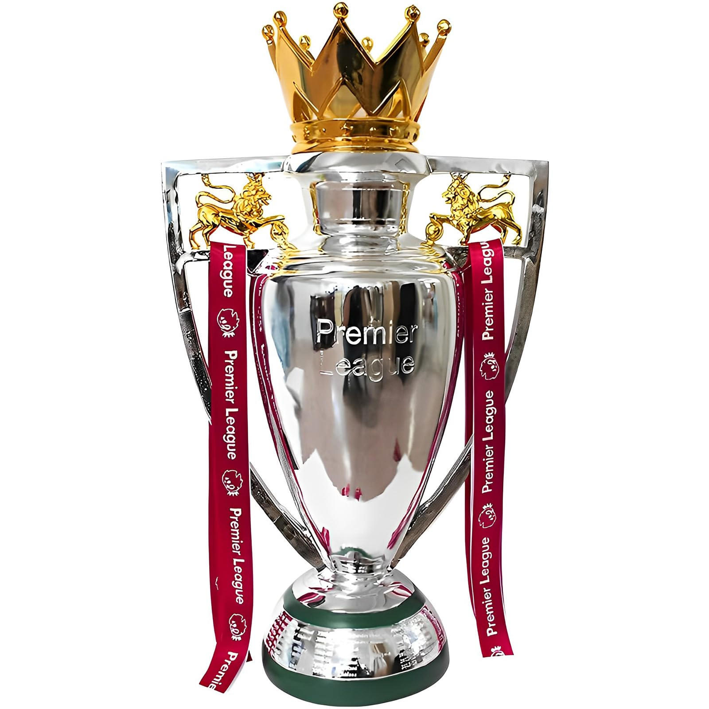 |
Premier League | 20 | 1907–08, 1910–11, 1951–52, 1955–56, 1956–57, 1964–65, 1966–67, 1992–93, 1993–94, 1995–96, 1996–97, 1998–99, 1999–2000, 2000–01, 2002–03, 2006–07, 2007–08, 2008–09, 2010–11, 2012–13 |
 |
FA Cup | 13 | 1908–09, 1947–48, 1962–63, 1976–77, 1982–83, 1984–85, 1989–90, 1993–94, 1995–96, 1998–99, 2003–04, 2015–16, 2023–24 |
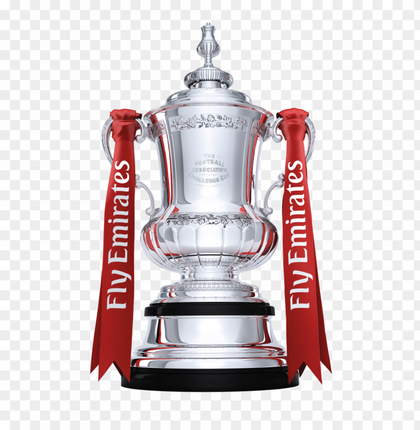 |
League Cup | 6 | 1991–92, 2005–06, 2008–09, 2009–10, 2016–17, 2022–23 |
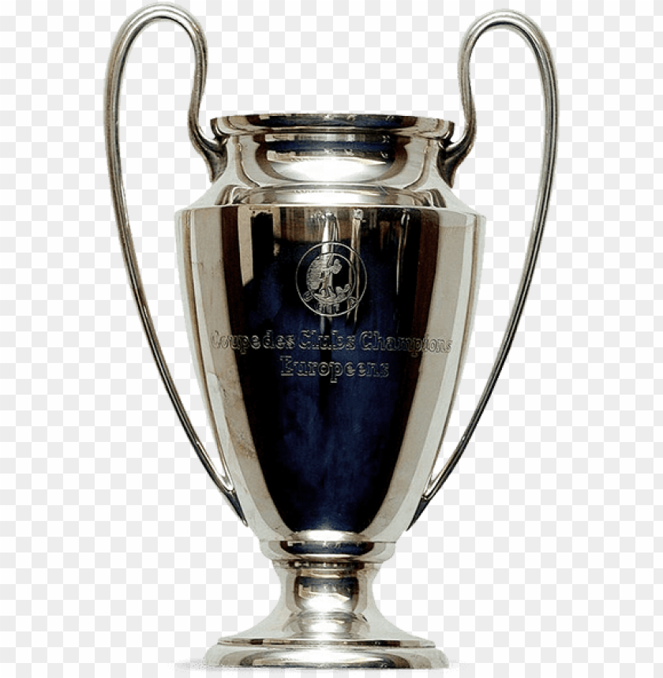 |
UEFA Champions League | 3 | 1967–68, 1998–99, 2007–08 |
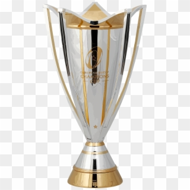 |
UEFA Europa League | 1 | 2016-17 |